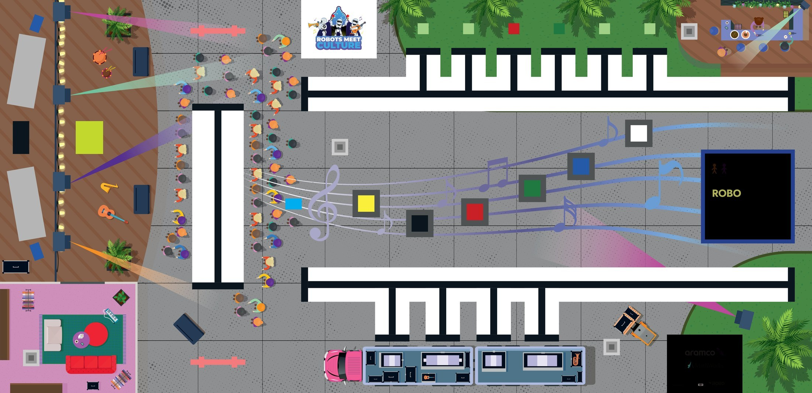

The official WRO RoboMission Elementary game mat measures 2362 mm × 1143 mm (General Rules §7.2, ± 5 mm tolerance per dimension). The overlay adds a 50 mm reference grid, edge ruler, and labelled call-outs for every named area in the rules. Use the toolbar to measure distances, plan robot paths, check turn angles, and place a robot footprint. Click EXPORT CODE to convert a planned path into starter Python or Word Blocks pseudocode. Coordinates use a top-left origin (0, 0).

Tip: place a POSE at your robot's start to set the starting heading, then a PATH for the route. The generator will compute turn angles between segments automatically.